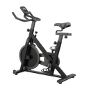

Stationary Bike
A seated cardio machine movement that drives a flywheel through a continuous pedalling cycle, training the legs with no impact through the joints.
Upper legs · Stationary Bike · Beginner

Muscles worked by the Stationary Bike
Primary
Secondary
Also called: quad, quads, quadriceps, quadriceps femoris, front thigh.
Equipment

Stationary BikeAlso called: exercise bike, upright bike, spin bike, spinning machine, recumbent bike, indoor cycling bike.
How to do the Stationary Bike
- Set the saddle height so your knee stays slightly bent at the bottom of the pedal stroke, then sit down and place the balls of your feet on the pedals.
- Take the handlebars with a relaxed grip and sit tall, with your back neutral and your shoulders down.
- Push one pedal down and forward while the other rises, keeping the effort in your legs rather than pulling on the bars.
- Keep pedalling in a smooth, even circle at a steady cadence, breathing in rhythm with the stroke.
- Adjust the resistance to hold your target effort, and continue for the desired time or distance.
Form tips
- Set the saddle before you start: too low grinds the knees, too high rocks your hips side to side at the bottom of every stroke.
- Drive with the legs and keep the upper body quiet — gripping and hauling on the bars adds nothing but neck and shoulder tension.
- Raise the resistance rather than spinning the pedals loose and fast; a light flywheel at high cadence feels hard on the lungs but does little for the legs.
At a glance
| Body part | Upper legs |
|---|---|
| Category | Cardio |
| Force type | Push |
| Mechanic | Compound |
| Difficulty | Beginner |
| Equipment | Stationary Bike |
| Goals | Endurance |
| Tags | Conditioning, Leg day, No axial load, Knee safe, Lower back safe |
| MET | 8.0 (metabolic equivalent, for calorie estimates) |
| Unilateral | No |
| Bodyweight | No |
| Dataset id | stationary-bike |
Stationary Bike in German & Spanish
| German | Fahrradergometer |
|---|---|
| Spanish | Bicicleta Estática |
Descriptions, instructions and tips ship in all three languages in the JSON.
Related exercises
Exercise data (JSON)
The record below is exactly what exercises.json ships for this exercise — names, descriptions, instructions and tips in English, German and Spanish.
{
"id": "stationary-bike",
"name_en": "Stationary Bike",
"name_de": "Fahrradergometer",
"name_es": "Bicicleta Estática",
"description_en": "A seated cardio machine movement that drives a flywheel through a continuous pedalling cycle, training the legs with no impact through the joints.",
"description_de": "Eine Ausdauerübung im Sitzen, bei der ein Schwungrad in einem durchgehenden Tretzyklus angetrieben wird — Beinarbeit ganz ohne Stoßbelastung für die Gelenke.",
"description_es": "Un ejercicio cardiovascular sentado que mueve un volante de inercia mediante un pedaleo continuo, trabajando las piernas sin impacto sobre las articulaciones.",
"category": "cardio",
"force_type": "push",
"mechanic": "compound",
"difficulty": "beginner",
"equipment": "stationary_bike",
"body_part": "upper_legs",
"primary_muscles": [
"quadriceps"
],
"secondary_muscles": [
"gastrocnemius",
"gluteus_maximus",
"hamstrings",
"soleus"
],
"goals": [
"endurance"
],
"tags": [
"conditioning",
"leg_day",
"no_axial_load",
"knee_safe",
"lower_back_safe"
],
"is_unilateral": false,
"is_bodyweight": false,
"instructions_en": [
"Set the saddle height so your knee stays slightly bent at the bottom of the pedal stroke, then sit down and place the balls of your feet on the pedals.",
"Take the handlebars with a relaxed grip and sit tall, with your back neutral and your shoulders down.",
"Push one pedal down and forward while the other rises, keeping the effort in your legs rather than pulling on the bars.",
"Keep pedalling in a smooth, even circle at a steady cadence, breathing in rhythm with the stroke.",
"Adjust the resistance to hold your target effort, and continue for the desired time or distance."
],
"instructions_de": [
"Stell die Sattelhöhe so ein, dass das Knie am tiefsten Punkt der Kurbelumdrehung leicht gebeugt bleibt, setz dich auf und leg die Fußballen auf die Pedale.",
"Fass den Lenker locker an und sitz aufrecht, mit neutralem Rücken und tiefen Schultern.",
"Drück ein Pedal nach unten und vorn, während das andere hochkommt, und halt die Arbeit in den Beinen statt am Lenker zu ziehen.",
"Tritt in einem runden, gleichmäßigen Kreis mit konstanter Trittfrequenz weiter und atme im Rhythmus der Kurbel.",
"Pass den Widerstand an, bis die gewünschte Belastung stimmt, und fahr die gewünschte Zeit oder Distanz."
],
"instructions_es": [
"Ajusta la altura del sillín para que la rodilla quede ligeramente flexionada en el punto más bajo del pedaleo, siéntate y apoya la parte anterior de los pies en los pedales.",
"Sujeta el manillar con un agarre relajado y siéntate erguido, con la espalda neutra y los hombros bajos.",
"Empuja un pedal hacia abajo y hacia delante mientras el otro sube, manteniendo el esfuerzo en las piernas en lugar de tirar del manillar.",
"Sigue pedaleando en un círculo suave y regular a una cadencia constante, respirando al ritmo del pedaleo.",
"Ajusta la resistencia para sostener el esfuerzo que buscas y continúa durante el tiempo o la distancia deseados."
],
"tips_en": [
"Set the saddle before you start: too low grinds the knees, too high rocks your hips side to side at the bottom of every stroke.",
"Drive with the legs and keep the upper body quiet — gripping and hauling on the bars adds nothing but neck and shoulder tension.",
"Raise the resistance rather than spinning the pedals loose and fast; a light flywheel at high cadence feels hard on the lungs but does little for the legs."
],
"tips_de": [
"Stell den Sattel ein, bevor du losfährst: zu tief mahlt in den Knien, zu hoch lässt die Hüfte bei jeder Umdrehung von einer Seite zur anderen kippen.",
"Arbeite aus den Beinen und halt den Oberkörper ruhig — sich am Lenker festzuklammern und daran zu reißen bringt nichts außer Nacken- und Schulterspannung.",
"Dreh eher den Widerstand hoch, statt die Pedale locker und schnell rotieren zu lassen; ein leichtes Schwungrad bei hoher Frequenz fühlt sich in der Lunge hart an, bringt den Beinen aber wenig."
],
"tips_es": [
"Ajusta el sillín antes de empezar: demasiado bajo castiga las rodillas y demasiado alto hace que la cadera bascule de lado a lado en cada pedalada.",
"Empuja con las piernas y mantén el tren superior quieto — agarrarte y tirar del manillar solo añade tensión en el cuello y los hombros.",
"Sube la resistencia en lugar de girar los pedales sueltos y rápidos; un volante ligero a cadencia alta se siente duro en los pulmones pero aporta poco a las piernas."
],
"met": 8.0,
"images": {
"flat": {
"main": "images/flat/stationary-bike-main.webp"
}
}
}Fetch just this exercise
const { exercises } = await fetch(
"https://exercise-dataset.com/exercises.json"
).then(r => r.json());
const ex = exercises.find(e => e.id === "stationary-bike");Free for personal and commercial in-app use with attribution (“Exercise data by RepDB”) — see the license and ready-made attribution snippets. Redistributing the data as a dataset or API is not permitted.